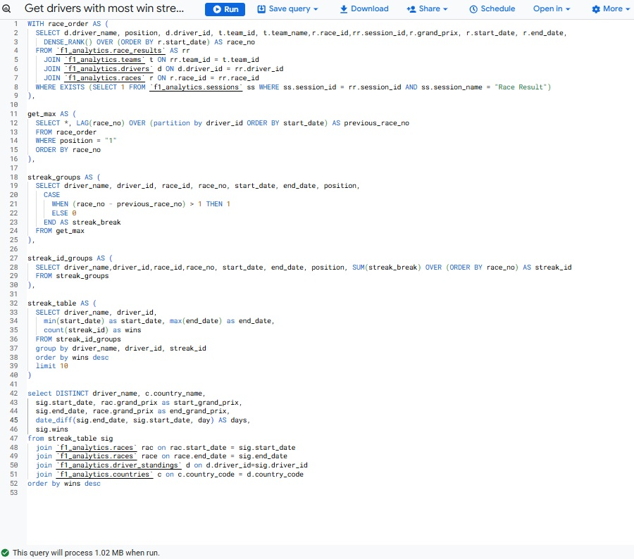
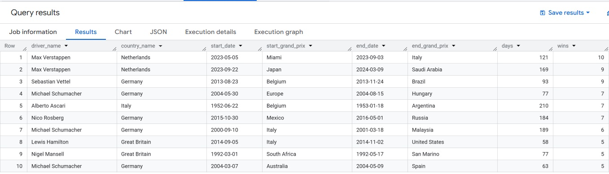
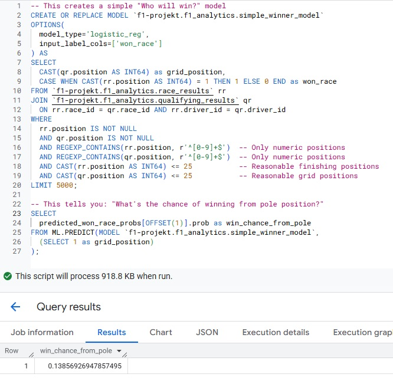

📊 Analysis
I have developed some analytical SQL queries and a simple machine learning model in BigQuery to explore the F1 data. For example:
-
Race standings queries show each driver’s current points, position changes, and championship ranking after the current race (updated result after every new race).


-
Win streak analysis identifies drivers like Max Verstappen and Sebastian Vettel with the longest consecutive wins in F1 history.
 
-
Machine Learning model results estimate the probability of winning from pole position at around 13.9%, providing insight into the impact of starting grid position.
